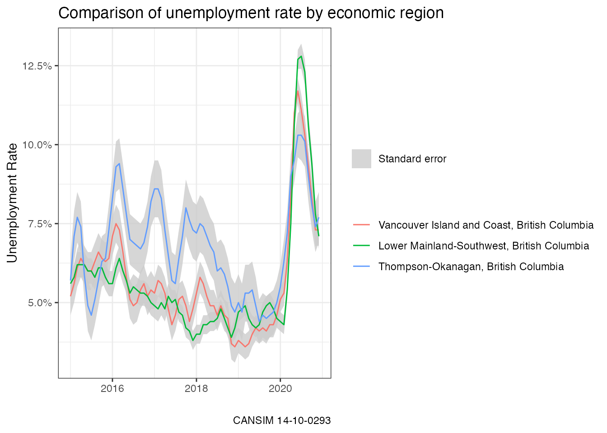

Listing Statistics Canada data tables
2025-05-12
Source:vignettes/listing_cansim_tables.Rmd
listing_cansim_tables.RmdThis vignette details how to use the internal table search functions
in the cansim package with a simple example using
employment data for economic regions in British Columbia.
The list of available tables is cached in the current R session to avoid repeated downloading of data.
Listing and filtering tables
Calling list_cansim_cubes returns a data frame with
useful metadata for available tables. There are 21 fields of metadata
for each table including title, in English and French, keyword sets,
notes, and table numbers.
library(cansim)
names(list_cansim_cubes())
#> Retrieving cube information from StatCan servers...
#> [1] "cansim_table_number" "cubeTitleEn" "cubeTitleFr"
#> [4] "productId" "cansimId" "cubeStartDate"
#> [7] "cubeEndDate" "releaseTime" "archived"
#> [10] "subjectCode" "surveyCode" "frequencyCode"
#> [13] "corrections" "issueDate" "dimensionNameEn"
#> [16] "dimensionNameFr" "surveyEn" "surveyFr"
#> [19] "subjectEn" "subjectFr"The appropriate table can be found by subsetting or filtering on the properties we want to use to find the appropriate tables.
library(dplyr, warn.conflicts = FALSE)
list_cansim_cubes() %>%
filter(grepl("Labour force characteristics",cubeTitleEn),
grepl("economic region",cubeTitleEn)) %>%
select(cansim_table_number,cubeTitleEn)
#> Retrieving cube information from temporary cache.
#> # A tibble: 4 × 2
#> cansim_table_number cubeTitleEn
#> <chr> <chr>
#> 1 14-10-0090 Labour force characteristics by province, territory and e…
#> 2 14-10-0293 Labour force characteristics by economic region, three-mo…
#> 3 14-10-0462 Labour force characteristics by economic region, three-mo…
#> 4 14-10-0464 Labour force characteristics by province, territory and e…The search came up with two tables. In this example we are interested
in the unemployment rate for 2015 onward for the Lower Mainland,
Vancouver Island, and Okanagan economic regions from the Labour Force
Characteristics table. We use the tidyr package here to
reshape data from a long format to a wider format.
library(tidyr)
selected_table <- "14-10-0293"
data <-get_cansim(selected_table) %>%
filter(grepl("Mainland|Vancouver Island|Okanagan", GEO),
Date>=as.Date("2015-01-01"),
`Labour force characteristics`=="Unemployment rate") %>%
select(Date, GEO, Statistics, val_norm) %>%
spread(key="Statistics", value=val_norm)
#> Accessing CANSIM NDM product 14-10-0293 from Statistics Canada
#> Parsing dataWe can visualize then results with ggplot2.
library(ggplot2)
ggplot(data, aes(x=Date, group = GEO,y=Estimate)) +
geom_ribbon(aes(ymin=Estimate - `Standard error of estimate`,
ymax=Estimate + `Standard error of estimate`, fill=""),
alpha=0.8) +
geom_line(aes(color=GEO)) +
scale_y_continuous(labels=scales::percent) +
scale_fill_manual(name = "", values="grey80", label="Standard error") +
theme_bw() +
labs(title = "Comparison of unemployment rate by economic region",
y = "Unemployment Rate",
x = "",
color = "",
caption=paste0("CANSIM ", selected_table))